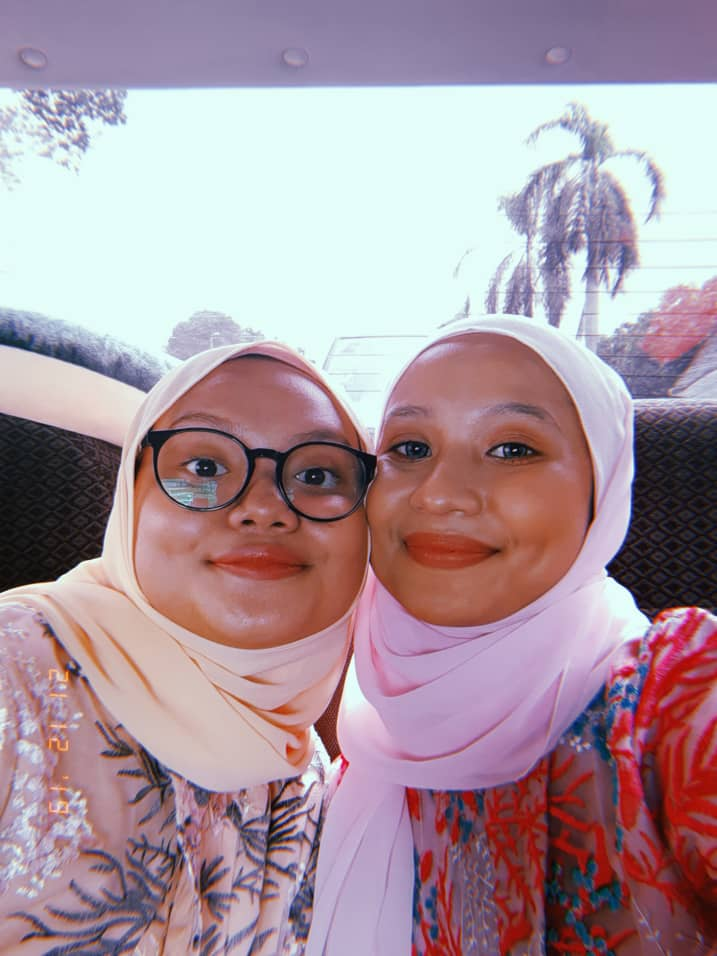
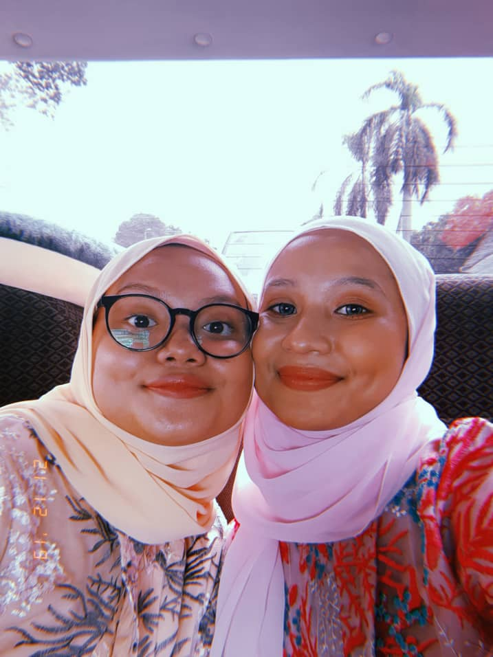

My King and my Queen. Abah's full name is Mohammad bin Embong. He is 62 this years but hey, he still look tough and handsome. He is a retired man and now his full time job is accompany my mom at home and make her the happiest woman in the world. Abah do know how to win our hearts at his best. He is the only man that will never break my heart. Now, lets we move on to my one and only Queen. Mama's full name is Roziah binti Omar. She is 58 years old and a full house wife. The best thing about Mama, well actually everything about her is fantastic, but when it comes to her cooking, you will not reject and say no. She is really good in cooking, baking and sewing. A perfect and talented woman, wow I am so amazed with her.
 
Now lets meet my siblings! I have 5 siblings and I am the fourth. I have 3 brothers and 1 youngest sister. My brothers not a photo-kind of person thats why it just me and my lil sister. Okay, so my brothers, the 3 of them already working and one of them is already married. The other two is waiting for their princess to slip off their heels. My brothers which is also my banker will never let us down when it comes to money and foods. Anything that we want, they will make it come true. For my youngest sister, she is everything to me. Many people said that we are twins, but actually we are not. We share almost everything together including our clothes and shawls. Well, thats not the best part of having a sister but, its fine. She is the joker, the doctor, the enemy and everything well, you just named it. She knows how to cheer me up, but sometimes she can be so annoying. No matter what, she is the best thing that ever happen in my life.